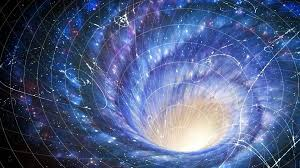

|

Galaksi Kümeleri
Galaksi kümeleri, evrende birbirine yerçekimiyle bağlı olan yüzlerce hatta binlerce galaksiden oluşan devasa yapılardır. Bu kümeler, evrenin en büyük
düzenli yapı taşları arasında yer alır ve galaksilerin tek başlarına değil, toplu hâlde nasıl davrandıklarını anlamamızı sağlar.
Bir galaksi kümesi yalnızca galaksilerden ibaret değildir. Kütlesinin büyük bir kısmını karanlık madde oluşturur; geri kalanını ise galaksiler arası
boşlukta bulunan sıcak gaz (plazma) ve galaksiler arası ışınım meydana getirir. Bu sıcak gaz, milyonlarca derece sıcaklığa ulaşabilir ve X-ışınları
şeklinde radyasyon yayar. Bu nedenle galaksi kümeleri, genellikle X-ışını teleskoplarıyla da incelenir.
Galaksi kümelerinin büyüklüğü farklılık gösterir. Daha küçük sistemlere galaksi grubu, daha büyük ve karmaşık yapılara ise süper küme denir. Bizim
galaksimiz olan Samanyolu, yaklaşık 50’den fazla galaksi içeren Yerel Grup (Local Group) adlı küçük bir kümenin parçasıdır. Bu grubun en büyük üyeleri
Andromeda ve Samanyolu galaksileridir. Yerel Grup da daha geniş bir yapı olan Virgo Süperkümesi içinde yer alır.
Kümeler içindeki galaksiler sürekli olarak birbirleriyle etkileşir, çarpışır veya birleşirler. Bu süreçler galaksilerin biçimlerini değiştirir, yıldız
oluşumlarını etkiler ve zamanla yeni galaksi türlerinin ortaya çıkmasına neden olur.
Sonuç olarak, galaksi kümeleri, evrenin büyük ölçekli yapısını anlamamızda temel öneme sahiptir. Bu dev yapılar, yalnızca galaksilerin dağılımını değil,
aynı zamanda karanlık maddenin ve evrenin genişlemesinin doğasını da anlamamız için bir laboratuvar görevi görür.
|